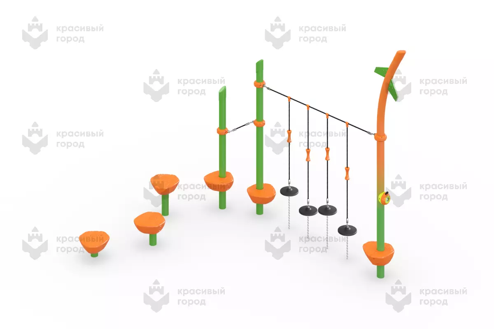

Красивый город · арт. 2355.3
Спортивный элемент «Палки» тип-3
Маршрут баланса с канатным переходом и сенсорным элементом.
- Д × Ш × В
- 4600 × 2300 × 3350 мм
- Возраст
- 6–12 лет
- Зона безопасности
- не указана; запросить у производителя
- Высота свободного падения
- 2000 мм
- Цена
- не опубликована / по запросу
Предварительно подходит
- Таранца (Карандаши): Для варианта «Цветной маршрут» как самостоятельный элемент координации.
- Молчанова (Новый город): Для «Природного двора» или «Двора приключений»; размер участка пока неизвестен.
- Байконур (Космодром): Как дополнительная полоса подготовки космонавтов, при наличии свободной зоны.
Характеристики производителя предварительные. Размер оборудования не равен зоне безопасности.
Карточка производителя ↗